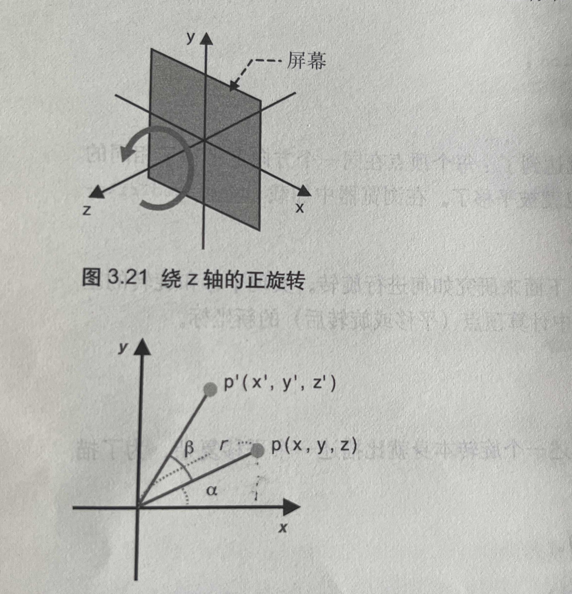

旋转三角形

为了描述一个旋转，必须考虑指明：
1、旋转轴（图形将围绕旋转轴旋转）
2、旋转方向（方向：顺时针或者逆时针）
3、旋转角度（旋转图像经过的角度）
齐次坐标就是用N+1维来代表N维坐标
使用缓冲区对象向顶点着色器传入多个顶点的数据，需要遵循一下五个步骤。
1、创建缓冲区对象( gl.createBuffer() );
2、绑定缓冲区对象（ gl.bindBuffer() ）;
3、将数据写入缓冲区对象 （ gl.bufferData() ）;
4、将缓冲区对象分配给一个 attribute 变量（ gl.vertexAttribPointer() ）；
5、开启 attribute 变量 （gl.enableVertexAttribArray() ）